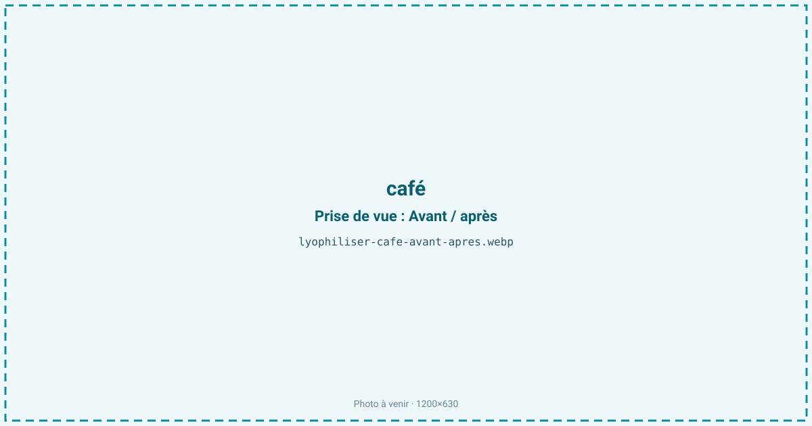
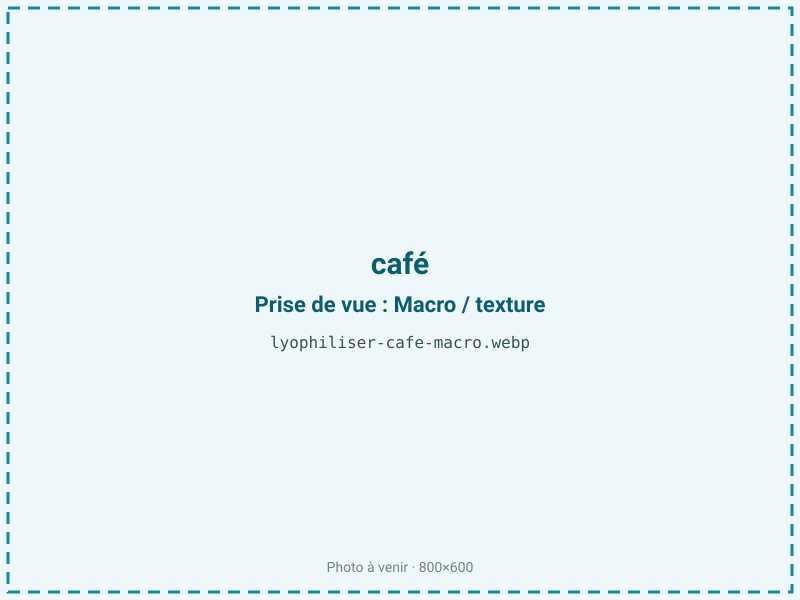
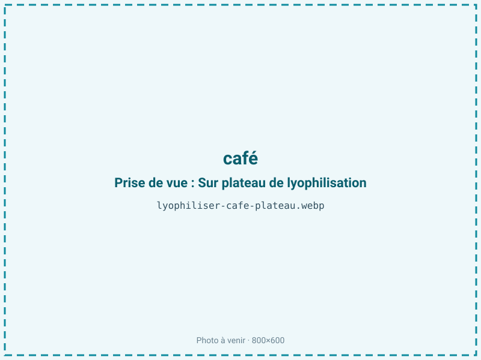
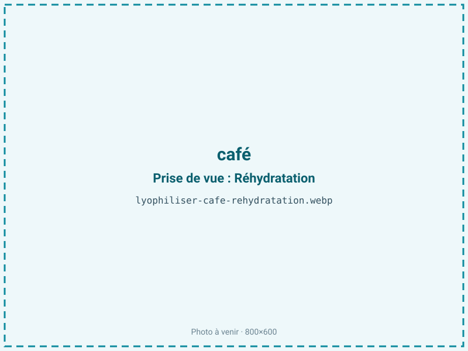

Lyophiliser du café
L'arôme du café est extrêmement volatil et se perd dès l'extraction. La lyophilisation d'un extrait concentré donne un café soluble qui restitue l'arôme bien mieux que l'atomisation à chaud : le froid fige les composés volatils dans une matrice de mélanoïdines. C'est le procédé du café soluble premium, aux granulés caractéristiques.

En bref
Comment café se comporte à la lyophilisation
On ne lyophilise pas des grains mais un extrait : le café torréfié est infusé, puis l'extrait est concentré à environ 30 à 40 % de matière sèche avant congélation. Cet extrait est dominé par des mélanoïdines — des polymères bruns issus de la réaction de Maillard à la torréfaction — très hygroscopiques, par des acides chlorogéniques, de la caféine (stable) et une fraction lipidique résiduelle (diterpènes comme le cafestol et le kahweol) qui, elle, est oxydable.
L'extrait concentré est congelé en plaque, puis fragmenté en granulés avant sublimation ; c'est cette étape qui donne au café lyophilisé ses grains anguleux caractéristiques, différents de la poudre fine de l'atomisation. Le vrai enjeu est aromatique : le café renferme plusieurs centaines de composés volatils, dont beaucoup partent avec la vapeur d'eau. Le froid en retient plus que le séchage à chaud, mais le procédé reste une course contre la perte d'arôme, ce qui explique l'attention portée à la vitesse de congélation et à la limitation des temps chauds.
Paramètres de cycle
Extraire puis concentrer l'extrait à 30–40 % de matière sèche : plus il est concentré au départ, plus le cycle est court et l'arôme préservé. Congeler l'extrait en plaque à basse température (−40 °C ou moins) pour figer une structure fine, puis le concasser en granulés calibrés avant sublimation. En primaire, garder une clayette modérée pour ne pas chasser les volatils ; le café soluble étant très hygroscopique, on soigne le secondaire pour descendre l'humidité résiduelle. L'aw cible de 0,20 à 0,30 vise avant tout à empêcher le mottage et l'agglomération des mélanoïdines, qui se produisent dès que l'humidité remonte. Le critère d'arrêt est un granulé sec, friable et non collant. C'est un point de compromis : la fraction lipidique préférerait une aw un peu plus haute (voir conservation), mais l'hygroscopicité impose de rester bas.
Pièges connus
- Extraire et concentrer avant traitement.
- Arômes volatils : conditionner à l'abri de l'air.



Variantes & provenance
L'origine et la torréfaction dictent le profil : un arabica de spécialité donne un extrait plus aromatique et acidulé, un robusta plus corsé, amer et caféiné. Plus la torréfaction est poussée, plus les mélanoïdines sont abondantes et l'extrait sombre et hygroscopique. Le taux de concentration de l'extrait avant congélation change le rendement et la finesse des granulés. On peut lyophiliser un café pur origine, un assemblage ou un café aromatisé, chaque cas ajustant le cycle. La granulométrie visée (gros grains « premium » ou poudre plus fine) se règle à l'étape de concassage, après congélation et avant sublimation.
Conservation & DLUO
Le café soluble cumule deux facteurs limitants. Sa fraction lipidique résiduelle (diterpènes) est oxydable : pour cette fraction grasse, l'optimum de stabilité oxydative se situe entre aw 0,30 et 0,50, et descendre sous aw 0,30 retire la monocouche d'eau qui protège les lipides, ce qui accélère leur rancissement. Mais le café est aussi dominé par des mélanoïdines extrêmement hygroscopiques : au-dessus de aw 0,30, la poudre se motte, s'agglomère et perd sa coulabilité. On arbitre donc en pratique vers le bas de la plage (0,20 à 0,30) pour préserver la texture, en compensant le risque oxydatif par l'exclusion de l'oxygène. La perte d'arôme volatil et la reprise d'humidité restent, au quotidien, les dégradations les plus visibles. Comptez 18 à 24 mois en barrière, idéalement avec inertage et à l'abri de l'air et de la lumière ; un stockage au frais ralentit à la fois l'oxydation et la fuite des arômes.
18 à 24 mois en barrière.
Estimez selon votre emballage :
Face aux autres procédés de séchage
Le café soluble se fait surtout par atomisation à chaud (spray-drying), procédé rapide et bon marché, mais dont le front chaud chasse une grande part des composés volatils : le café obtenu est plus plat. Le séchage à l'air n'a pas de sens pour un extrait liquide, et le micro-ondes sous vide, s'il abaisse la température, applique encore un front chaud défavorable aux arômes les plus fragiles. La lyophilisation est la voie de référence du café soluble premium : elle restitue davantage d'arôme et donne les granulés anguleux appréciés du consommateur, au prix d'un cycle plus long et plus coûteux — surcoût assumé sur ce segment haut de gamme.
Marchés & applications
Café soluble premium en granulés, boissons instantanées et mélanges (cappuccino, 3-en-1), café aromatisé, ingrédient pour l'agroalimentaire (glaces, pâtisserie, confiserie), boissons prêtes à consommer. Les clients types sont les torréfacteurs et marques de café soluble haut de gamme, les industriels des boissons instantanées et des desserts, les acteurs du café de spécialité qui veulent un soluble à la hauteur de leur grain, ainsi que les formulateurs cherchant un extrait de café stable et aromatique, sans chaîne du froid.
- Café soluble premium
- Boissons instantanées
Questions fréquentes — café
Lyophilise-t-on des grains de café ?
Non, un extrait : le café est infusé et concentré, puis l'extrait est congelé, granulé et sublimé. D'où les grains anguleux du café lyophilisé.
Pourquoi a-t-il plus de goût que le soluble classique ?
Parce que le froid retient plus de composés volatils que l'atomisation à chaud (spray-drying), qui en chasse une grande part.
Pourquoi les granulés sont-ils anguleux ?
L'extrait congelé est concassé en morceaux avant séchage ; il conserve cette forme, contrairement à la poudre ronde de l'atomisation.
Le café soluble se conserve-t-il longtemps ?
18 à 24 mois en barrière au sec ; il est très hygroscopique et se motte dès qu'il reprend l'humidité, d'où un conditionnement hermétique.
Pourquoi ne pas le sur-sécher ?
Sa fraction lipidique résiduelle s'oxyde plus vite sous aw 0,30 ; on reste bas pour la texture, mais on compense en excluant l'oxygène.
La caféine est-elle affectée ?
Non, la caféine est stable au procédé : elle se retrouve intégralement dans le soluble, contrairement aux arômes volatils plus fragiles.
Peut-on lyophiliser un café de spécialité ?
Oui, c'est même l'intérêt : partir d'un extrait de qualité et le lyophiliser donne un soluble bien plus aromatique qu'un spray-drying industriel.
Prochaine étape : envoyez-nous 200 g
Vous avez les repères du café. La suite logique : nous envoyer un échantillon et repartir avec une fiche technique sur votre produit — rendement, aw finale, coût au kilo.
Tester du café — 250 à 500 €Déductible de votre premier lot.